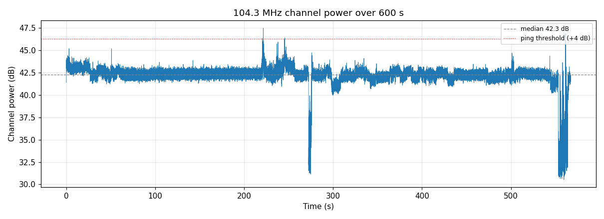
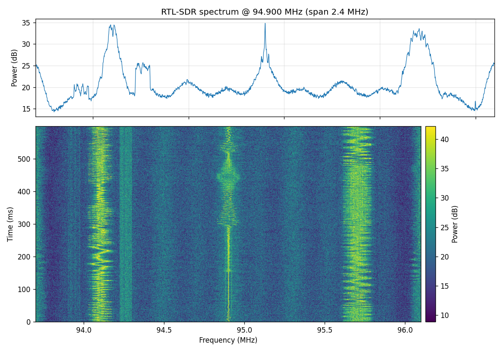
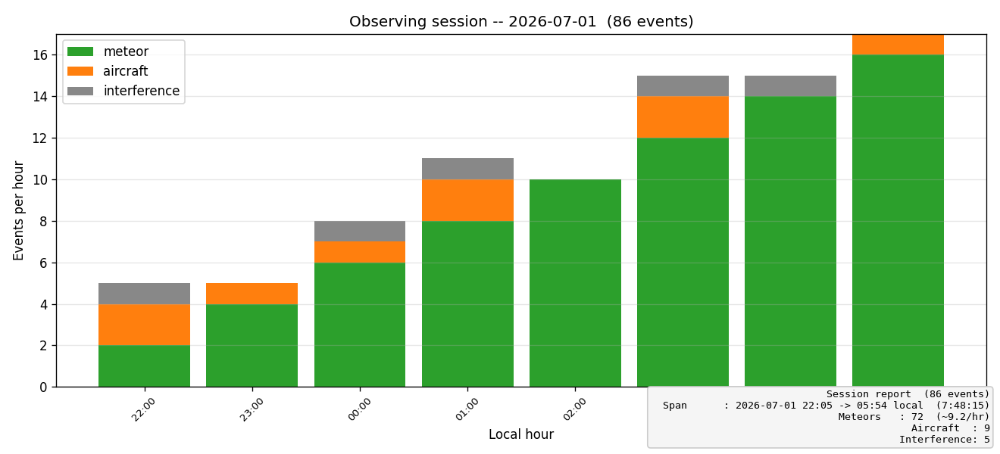

How the detector is built: the hardware chain, the DSP pipeline, the bring-up lessons, and what landed in each version from v1.0 to the v1.4 low-memory profile.
RTL-SDR FM forward-scatter meteor detection | Seattle, WA
Design, status, and roadmap Release v1.2 - GUI, Classification & Reporting Detect meteors by the radio echoes their ionized trails reflect from a distant FM transmitter that is normally below the horizon.
Slide 2 of 17
What is radio meteor forward-scatter?
A meteor entering the atmosphere (~80-120 km) leaves a brief trail of ionized gas that reflects VHF radio like a mirror.
Point the receiver at a powerful transmitter far beyond the horizon.
Normally you hear nothing (the signal passes overhead).
When a trail forms in the common volume, it reflects the signal down to you as a brief 'ping' (a few ms to ~1 s).
Works day and night, in any weather - a key advantage over visual.
Count / time-stamp pings to measure meteor activity and shower peaks.
Slide 3 of 17
Choosing the frequency: 104.3 MHz
Europe has dedicated beacons (GRAVES 143.05 MHz); North America does not.
-> Use FM broadcast forward-scatter: a channel VACANT locally but carrying a high-power station a few hundred km away.
Measured the Seattle FM band with the dongle (fm_vacancy.py):
104.3 MHz sits ~12 dB below the noise floor - locally empty.
Distant co-channel stations on 104.3 (beyond the horizon):
KAWO, Boise ID - 52 kW - ~650 km (ideal geometry)
KSOP-FM, Salt Lake City UT - 25 kW - ~1100 km (bonus reflector)
Slide 4 of 17
Inputs: Hardware
RTL-SDR dongle:
RTL2832U demodulator + Rafael Micro R820T tuner (USB 0BDA:2838)
Delivers raw IQ samples over USB; tunable ~24-1766 MHz Antenna:
Small whip (used for bring-up). Weak-signal work wants better:
horizontal dipole or 3-el Yagi aimed ~SE toward Boise Host PC: Windows 11, USB 2.0+ Driver: WinUSB bound to dongle Interface 0 via Zadig (Interface 1 stays unbound - normal; RTL-SDR uses Interface 0 only)
FIXED gain 40.2 dB (stable baseline ~0.7 dB sigma)
warmup_skip_s = 20 s (ignore settling)
max_ping_ms = 2000 (reject aircraft/tropo)
threshold 6 -> 4 dB (still ~6 sigma)
Re-run baseline is flat (see plot) -> trustworthy detection.

Slide 9 of 17
Proof: real RF off the antenna
Spectrograph of live FM capture confirms the full chain works:
antenna -> dongle -> WinUSB -> Python -> image.
Bright vertical bands = local FM stations at exact channel freqs.
Flickering texture = live audio modulation (proves it is real signal, not an artifact).
The vacancy scan then found 104.3 clear for meteor scatter.

Slide 10 of 17
v1.1: Trigger snapshots
Problem: a ping COUNT cannot tell meteor from aircraft or interference.
Solution: keep a rolling IQ buffer; on each ping, render a zoomed spectrogram (pre-roll + event + post-roll) marked with the channel.
New: snapshot.py (IQRingBuffer + save_snapshot).
Changed: Ping carries sample indices; detector records them; main() saves a PNG per ping under snapshots/. Snapshot errors never stop capture.
Reading a snapshot:
Meteor -> brief streak LOCALIZED at 104.3 (maybe a Doppler tail)
Aircraft -> a carrier line SWEEPING in frequency over seconds Interference -> broadband smear across the whole window
Slide 11 of 17
v1.2: GUI, classification & reporting
Threaded capture engine (capture_engine.py) keeps the UI responsive.
Tkinter GUI (gui_app.py): live waterfall, Start/Stop, live freq/gain/ threshold, ping counter, per-class tally, and a snapshot GALLERY with class-colored thumbnails (click to enlarge).
Auto classification (classify.py) of every ping:
meteor / aircraft / interference, from spectral concentration, frequency drift, and duration. Written to CSV, filename & GUI.
Session report (session_report.py): pings-per-hour stacked by class, plus a text summary (example at right).

Slide 12 of 17
v1.3: Tabbed UI + surviving a long run
GUI split into a ttk.Notebook: Live tab (waterfall + side gallery) and Gallery tab (big image viewer, Prev/Next, full event list).
Problem: an overnight run could not be trusted to finish.
Auto-reconnect (reconnect.py -> ReconnectingReader): a USB/read error no longer ends the run -- close -> exponential backoff -> reopen -> resume.
Async snapshots (snapshot.py -> SnapshotWorker): matplotlib rendering moved to a background thread, so it never stalls the capture read and drops USB samples.
If the worker falls behind, extra RENDERS are dropped -- events still logged.
Shared by CLI, GUI and the Pi service. CLI prints a 5-minute heartbeat.
Slide 13 of 17
v1.4: Fitting a 1 GB Raspberry Pi (this release)
The insight: memory is dominated by SNAPSHOTS, not detection.
One second of IQ at 1.024 Msps = 8.2 MB. A queued snapshot job holds a whole event window: ~4 MB (brief meteor) to ~25 MB (2 s event).
v1.3's 32-JOB queue bound was really a ~790 MB bound -> OOM on a Pi during an aircraft burst, which is exactly when the queue fills.
Fixes (all shared by CLI / GUI / Pi):
Queue bounded by BYTES. dsp.py: chunked float32 FFT (numpy upcasts to complex128, so the old one-shot FFT spiked ~150-200 MB PER EVENT). Ring buffer is now preallocated + circular (was re-allocating ~33 MB four times a second).
snapshot_mode = png | npz | off. On the Pi, matplotlib is never imported (~90 MB)
-- events are saved as compact .npz and rendered on a PC (render_snapshots.py).
Measured: ~104 MB peak RSS on the 'pi' profile vs ~450-490 MB on the defaults.
v1.3 - Tabbed UI + long-run robustness Live/Gallery tabs; auto-reconnect; async snapshots off the capture thread.
v1.4 - Low-memory profile (CURRENT)
Fits the 1 GB Pi 3B+: byte-bounded queue, chunked FFT, circular ring, npz snapshot mode + PC-side rendering. config.py PROFILES['pi'].
Next Real-hardware validation on a Pi; trained classifier; dark theme; .exe packaging.
Slide 15 of 17
An observing session: a meteor shower night
Example: Perseids peak, night of Aug 12-13 (also Delta Aquariids late Jul).
Before: python fm_vacancy.py to confirm 104.3 still clear; check gain fixed.
Run: python meteor_detector.py continuously, e.g. 22:00 -> 06:00 local.
Snapshots ON; CSV logging the whole night.
Expect: ping rate RISES after local midnight toward dawn (Earth's leading side faces the meteor stream), and higher near the peak date.
Watch out: summer sporadic-E can mimic activity - real pings are brief;
E-skip openings last minutes and show in snapshots as sustained signal.
After: review snapshots, classify, plot pings-per-hour vs time & vs sporadic rate.
Slide 16 of 17
Next steps
Antenna upgrade (biggest sensitivity gain): dipole/Yagi aimed SE to Boise.
Real-hardware validation of v1.3/v1.4 -- all of it is so far verified HEADLESSLY on Windows against synthetic sources; the Pi run is still pending.
Frequency calibration: rtl_test -p to set freq_correction_ppm.
Longer unattended runs (overnight) to gather real event statistics, then tune classifier thresholds against confirmed events. Target: Perseids Aug 12-13.
Later: trained classifier; dark theme + MHz axis polish; package as an .exe.
Optional: second reference channel (e.g., 104.5 Spokane) for cross-checking.
Optional: contribute counts to citizen-science meteor networks.
Slide 17 of 17
Caveats & limitations
Small whip antenna limits sensitivity -> expect low ping rates for now.
Summer sporadic-E (Jun-Aug) can cause false pings; distinguish by duration.
RTL-SDR frequency drift until warmed up / ppm-calibrated.
Only one process may hold the dongle at a time.
pyrtlsdr patch lives in site-packages; a reinstall reverts it.
Classification (v1.2+) is HEURISTIC, not trained -- treat labels as triage, and expect to tune the thresholds in config.py against confirmed events.
Under heavy load a SNAPSHOT may be dropped (v1.3/v1.4 governors) -- the EVENT is always still classified and logged, so the counts never suffer.